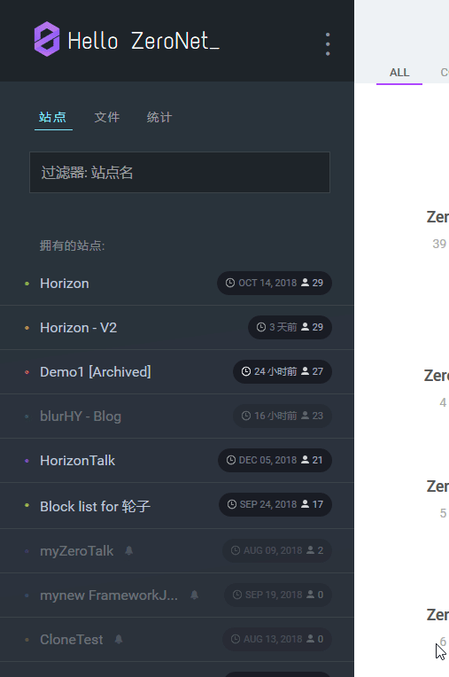

创建静态站点
本章讲述了如何创建站点——“关于我”。
创建空站点

创建完后弹出新站点。

- Page address 即 站点的公钥
- Peers 就是零网客户端已找到的且拥有你的站点的节点. Peers 并不代表多少人访问过你的站点。
- Size 以字节为单位的 站点大小。
index.html里有啥
打开站点中的index.html。先打开零网根目录:
- 对于 macOS，零网位于
~/Application Support/ZeroNet/或者ZeroNet.app的位置。 - 对于 Windows，在零网安装目录 (如
C:\Program Files\ZeroNet\). - 如果你用 Git 安装零网，根目录就是 repo 的目录。
打开 data 目录，再打开以站点公钥为文件夹名的目录 (弹出的页面的网址，类似于 1CyNApZ4zp7k3SSXsrW54vEFMHHBpDy3nm)。其他目录就是零网网站的本地副本。
打开index.html:
<!DOCTYPE html> <html> <head> <title>New ZeroNet site!</title> <meta charset="utf-8" /> <meta http-equiv="content-type" content="text/html; charset=utf-8" /> <base href="" target="_top" id="base" /> <script> base.href = document.location.href .replace("/media", "") .replace("index.html", "") .replace(/[&?]wrapper=False/, "") .replace(/[&?]wrapper_nonce=[A-Za-z0-9]+/, ""); </script> </head> <body> <div id="out"></div> <script type="text/javascript" src="js/ZeroFrame.js"></script> <script> class Page extends ZeroFrame { setSiteInfo(site_info) { var out = document.getElementById("out"); out.innerHTML = "Page address: " + site_info.address + "<br>- Peers: " + site_info.peers + "<br>- Size: " + site_info.settings.size + "<br>- Modified: " + new Date(site_info.content.modified * 1000); } onOpenWebsocket() { this.cmd("siteInfo", [], function(site_info) { page.setSiteInfo(site_info); }); } onRequest(cmd, message) { if (cmd == "setSiteInfo") this.setSiteInfo(message.params); else this.log("Unknown incoming message:", cmd); } } page = new Page(); </script> </body> </html>
这东西不太容易理解，但先别急，咱先删点东西。
<!DOCTYPE html> <html> <head> <title>New ZeroNet site!</title> <meta charset="utf-8" /> <meta http-equiv="content-type" content="text/html; charset=utf-8" /> <base href="" target="_top" id="base" /> <script> base.href = document.location.href .replace("/media", "") .replace("index.html", "") .replace(/[&?]wrapper=False/, "") .replace(/[&?]wrapper_nonce=[A-Za-z0-9]+/, ""); </script> </head> <body></body> </html>
这样好点了，移除了一些对咱来说没啥用的脚本。再重新缩进一下。
<!DOCTYPE html> <html> <head> <title>New ZeroNet site!</title> <meta charset="utf-8" /> <meta http-equiv="content-type" content="text/html; charset=utf-8" /> <base href="" target="_top" id="base" /> <script> base.href = document.location.href .replace("/media", "") .replace("index.html", "") .replace(/[&?]wrapper=False/, "") .replace(/[&?]wrapper_nonce=[A-Za-z0-9]+/, ""); </script> </head> <body></body> </html>
除了 <base> 和边上的 <script>，其他的都可以删改。 每个零网站点都运行在沙盒<iframe>里，一些如 localStorage 就不能用了。
不要删除 js/ZeroFrame.js 文件，你的站点可能用不到，但几乎所有的零网网站的需要这个文件。
小技巧
禁用缓存
编辑文件后，浏览器中的网页并没有任何变化，这是因为有缓存。打开开发者工具，里面应该有选项禁用缓存。
- 对于 Firefox，按 F12 打开
开发者工具，点击 右上角的 Settings 图标 ，并选择Disable HTTP cache - 对于 Chrome, 按 F12 打开
开发者工具，再按 F1, 点击左导航栏的 Preferences ，并选择 Network菜单中的Disable cache
无法使用绝对路径
先创建一些<div>并引入 css。
添加 <div>1</div> 到 index.html， 1 就有了。
再创建文件 css/index.css ，包含下列内容：
div { color: red; }
...并引入到 index.html中：
<link rel="stylesheet" href="/css/index.css" type="text/css" />
没啥变化，为啥呢？看地址: http://127.0.0.1:43110/1CyNApZ4zp7k3SSXsrW54vEFMHHBpDy3nm/。 /css/index.css 计算后成了 http://127.0.0.1:43110/css/index.css. 所以在零网中绝对路径不可用，那么就把 <link> 改成：
<link rel="stylesheet" href="css/index.css" type="text/css" />
<iframe>元素没法用
每个零网网页都包含下列代码：
<script>
// If we are inside iframe escape from it
if (window.self !== window.top) window.open(window.location.toString(), "_top");
if (window.self !== window.top) window.stop();
if (window.self !== window.top && document.execCommand) document.execCommand("Stop", false)
</script>
所以不能把其他零网的网页放在 <iframe> 里，连自己的站点的网页都不能放。
设计
这个你自己设计，不过你可以看看我的 downloads.
站点设置
在侧边栏里设置站点描述和标题，看到右上角的0按钮了吗？点击按钮就会返回到 ZeroHello，往左拽试试:
_____ _____
/ \ / \
| 0 | <------- | 0 |
\_____/ \_____/
侧边栏就会弹出，显示了已连接的节点数、文件、数据库信息，还有你的 ID 的地址 (登陆 ZeroID 、 KaffieID 、 CryptoID 后就会变). 站长也可以改变站点信息。
滚动到底部编辑 站点标题 和 站点描述 参数，编辑完后要点 保存站点设置,设置就保存在 content.json里了，注意到这个文件了吗? 这个文件包含你的站点信息、设置等。
点击侧边栏最底下的签名并发布，
然后就会弹出内容发布失败。，
这很正常，现在只有你有这个站点。
等别人来下载你的站点就行。
如果你有固定 IP 或者打开了 tor，别人就可以下载你的站点，若是你想关电脑，就访问 0net.io: https://0net.io/{站点公钥}/ (侧边栏中的站点地址)后再关。
可用代理: 0net.io, @amorgan's proxy 以及 ZeroGate.
.bit 地址
如果你想要个域名像 ivanq.bit, 用 Namecoin，这个不讲，教程自己找。